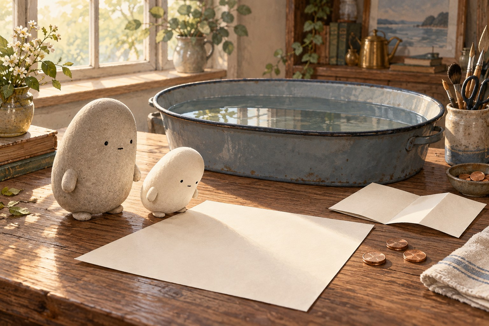
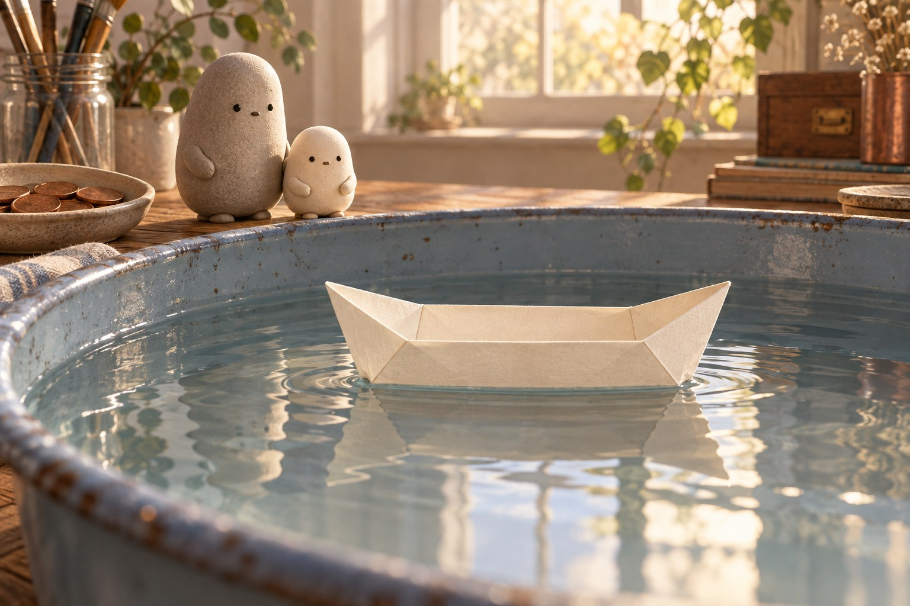

What holds a paper boat?
What holds a paper boat?

Little Wonderer set a sheet of paper beside a tub. “Could this carry a penny?” Big Wonderer put down a short list of folding commands. Little traced the first line. The paper was flat and flimsy. Somehow, those steps would have to give it a new shape.

“Fold the paper in half. Fold the corners down.” Little followed each command in order. More folds made an open boat with walls and a broad bottom. “Like a program,” Little said, “each step helps the next one work.” Now came the test. Would the folds hold?

Little lowered the boat into the tub. It floated: it stayed at the water’s surface. The boat pushed water aside, or displaced it. Water pushed back up. That push equaled the weight of the displaced water. When the upward push balanced the boat’s weight, the boat stopped sinking lower.
- float
- stay at the surface of water
- displace
- push water aside to make room
- waterline
- the line where the water meets the boat
- load
- the weight a boat carries
- absorb
- take water into a material
- command
- a sentence that tells what to do